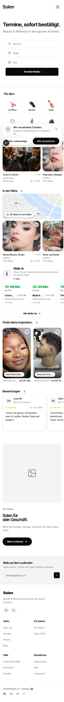
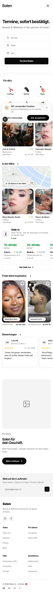

You said breathing room is right but those gaps were too big. Round 1 added 56 and 72. This is the same real homepage at 16, 24 and 32. Scroll inside each; the only difference is the space between sections.
Your lockfile already says the section rhythm is 32. The homepage renders 8. So "breathing room, but tighter" is not a new number to invent, it is almost exactly the law you already wrote and the code quietly ignored. Measured this turn: today the page is 4221px tall, 32 makes it 4365, so the whole cadence costs 144px. Round 1's version cost 400.
All three values sit on the 4pt grid, so whichever you pick stays inside the system instead of becoming another bespoke number.


The number goes into the Section primitive, so every page inherits the same cadence instead of each screen deciding for itself. Then the site sweep has one answer to apply across all 134 screens, which is the thing that was missing.